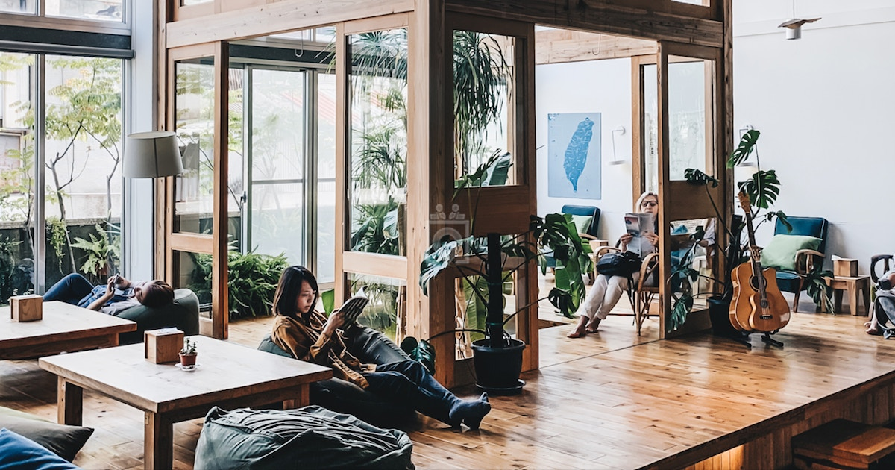

Johdanto
Tiimimme innovatiivinen konsepti vastaa ainutlaatuisiin haasteisiin, joita kohtaavat opiskelijat, kuten Hanna, a 44-vuotias suomalainen Kouvolan ulkopuolella asuva päätoiminen opiskelija. Opiskelun, työn ja perheen tasapainossa Hanna edustaa a demografinen eli Etsi edullisia asumisratkaisuja ja samalla etsii harmonista tasapainoa heidän elämässään. The Ratkaisumme tavoitteena ei ole vain parantaa olemassa olevien opiskelijoiden elinoloja, vaan myös parantaa houkutella uusia opiskelijoita Kouvolaan tarjoamalla kokonaisvaltaisen ja kestävän ratkaisun.
Käsitteen yleiskatsaus
Yhteistyössä paikallisen järjestön Kouvolan Asuntojen kanssa ehdotamme kolmikerroksisen rakennuksen kehittämistä rakennus lähellä LUT:ta Yliopisto ja XAMK-yliopisto vastaamaan molempien opiskelijayhteisöjen tarpeita.
Rakennuksen rakenne
Ensimmäinen kerros - Art Coffee Shop: Eloisa tila luoville opiskelijoille esitellä taidettaan. Viihtyisä ympäristö opiskeluun, ryhmätyöskentelyyn ja seurusteluun. Ammattilaisten työpaikkailmoitus työmahdollisuuksien julkaisemiseen. Sponsorina ovat TEK (Akateemisten insinöörien ja arkkitehtien liitto) ja muut mahdolliset sponsoreita. Opiskelijoille alennetut hinnat, ei-opiskelijoille normaalihinnat. Tietokeskus tietokoneilla, paikallisten tilojen kartat ja vuokraneuvotteluhuone. Työmahdollisuuksia kansainvälisille opiskelijoille baristaina, johtajina ja jäseninä siivousryhmä, osoitteet englanninkielisten työmahdollisuuksien puute Kouvolassa. Toinen kerros - Vakituinen opiskelija-asunto: Yhteistä majoitusta 2-3 asukkaalle, mikä kannustaa yhteiseen asumiseen. Edulliset kuukausivuokrat (noin 250-300 euroa/kk). Ensisijainen tulonlähde rakennuksen yleisen kunnossapidon tukemiseen. Kolmas kerros - Varattavissa olevat huoneet: Pienet, edulliset huoneet perusmukavuuksilla lyhytaikaiseen oleskeluun (1-2 päivää). Varaus käyttäjäystävällisen verkkosivuston/verkkosovelluksen kautta suojatuilla sisäänpääsyvaihtoehdoilla. Kohdennettu opiskelijoille ja tarjoaa kustannustehokkaan vaihtoehdon perinteiselle hotellimajoitukselle. Lisäominaisuuksia: Polkupyöränvuokrausmahdollisuus opiskelijoille kaupunkiin tutustumista varten edulliseen hintaan. Virtuaalinen kaupunkiopas, joka on saatavilla verkkosivustolta, jossa on kartta nähtävyyksistä. Kouvolaa ja LUT-yliopistoa mainostavat vetonaulasivut kuvauksineen. QR-koodit nähtävyyksissä, jotka ohjaavat ihmiset verkkosivustolle lisätietojen saamiseksi.
Taloudellinen kestävyys
Sponsorointi mahdollisilta sponsoreilta. Tulot pysyvästä opiskelijamajoituksesta satunnaisten varattavien huoneiden tukemiseen. Art Coffee Shopista saadut tulot myynnistä ja neuvotteluhuoneen vuokrauksesta.
Riskit
Taloudellinen riippuvuus: Sponsoroinnin varmistaminen erityisesti TEK:ltä on avainasemassa. Epävarmat sitoumukset aiheuttavat a rahoitusriski. Toiminnalliset haasteet: Art Coffee Shopin päivittäminen voi olla haastavaa ja vaativaa lisää resursseja. Vuokrausaste: Kestävyys riippuu korkeista käyttöasteista. Kysynnän lasku voi vaikuttaa taloudellinen vakaus. Säännösten noudattaminen: Paikallisten määräysten tiukka noudattaminen on välttämätöntä; noudattamatta jättäminen voisi johtaa juridisiin ongelmiin. Teknologiariskit: Verkkosivuston, verkkosovelluksen ja digitaalisen matkaoppaan kehittäminen ja ylläpito liittyy tekniikkaan riskit, kuten häiriöt tai kyberturvallisuusuhat.

Johtopäätös
Innovatiivinen konseptimme ei ainoastaan vastaa Hannan kaltaisten opiskelijoiden asumistarpeita, vaan myös edistää kokonaisuuteen Kouvolan kaupunkikehitys. Tarjoamalla kohtuuhintaisia asuntoja, luomalla yhteisötiloja ja edistää paikallista nähtävyyksiin, uskomme ratkaisumme houkuttelevan uusia opiskelijoita ja parantavan opiskelijan kokonaisuutta kokemusta Kouvolassa.